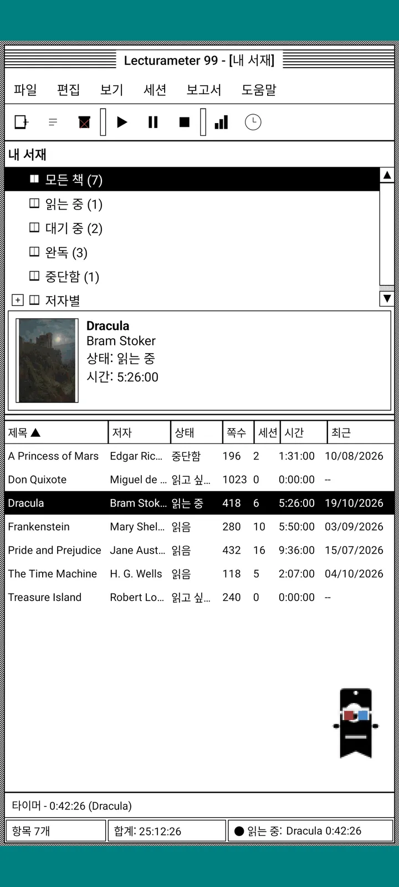
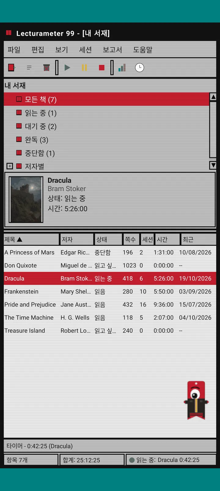
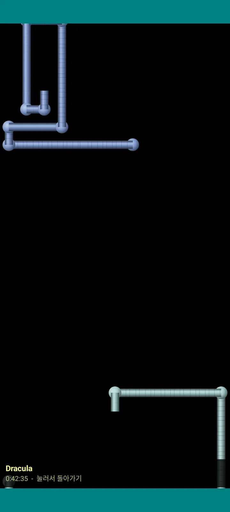

Lecturameter 1999
1999년에 CD-ROM으로 설치한 것 같은 Lecturameter. 창, 메뉴, 표로 된 앱의 대체 클라이언트로, 실제 백업 파일을 열 수 있어요.

어떤 앱인가요
휴대폰 속에 들어간 구십년대 말 데스크톱 프로그램. 청록색 바탕화면 위의 창 하나, 메뉴 바, 툴바, 폴더 트리, 빽빽한 표, 상태 표시줄.
- 서재 트리: 모든 책, 읽는 중, 대기 중, 완독, 중단, 저자별
- 제목, 저자, 상태, 페이지, 세션, 시간, 마지막 독서가 있는 표. 열 머리글을 누르면 정렬돼요
- Lecturameter와 같은 카탈로그를 쓰는 실제 책 검색
- Lecturameter 백업과 Goodreads CSV를 가져오고 내보내요. 데이터가 손실 없이 오가요

왜 만들었나요
하나의 실험이에요. 실제 앱은 건드리지 않고, 완전히 다른 디자인 전제로 Lecturameter의 아이디어를 처음부터 다시 만들어 보는 거죠. 여러 재해석 중 1999 버전이 가장 마음에 들어서 재미 삼아 완성했고, 완전한 클라이언트로 만들었어요. 일부러 Lecturameter보다 단순해요. 실험이라서 원칙적으로 더 이상 개발하지 않을 거예요.
- 초록색 LCD 화면이 있는 떠 있는 창의 타이머. 옮길 수 있고, 작업 표시줄로 최소화되며, 상태 표시줄에서 계속 시간을 재요
- 멈추면 세션 저장 대화상자가 페이지를 묻고 독서 속도를 계산해요. Lecturameter와 똑같아요
- 저장된 세션은 Lecturameter 세션이에요. Lecturameter 1999 백업을 내보내서 Lecturameter에서 가져오면 최신 앱으로 돌아가요.

독서 보고서
통계는 인쇄된 보고서예요: 요약, 블록 막대로 보는 책별 시간, 일일 페이지 수로 본 속도, 문자로 그린 한 해 달력, 최근 일주일.

세션 기록
더하기와 빼기로 펼치는 트리에 책별로 묶인 세션. 위쪽에 다섯 가지 숫자가 있어요: 세션, 총 시간, 페이지, 분당 페이지, 일일 페이지.

세션 저장
날짜, 분, 시작 페이지와 마지막 페이지, 메모. 입력하는 동안 요약이 페이지와 속도를 계산해요. 마지막 페이지에 도달하면 책을 다 읽었는지 물어봐요.

Pagi 99
Pagi도 1999년으로 떠나요. 그 시절 사무용 도우미처럼 픽셀 모습으로 화면을 자유롭게 돌아다니죠. 드래그할 수 있고, 누르면 한마디 하고, 노란 말풍선으로 팁을 알려 줘요.
테마
클래식 98은 무료이고 기본 테마예요. 팩에는 여섯 개가 더 있고, 각각 고유한 배경과 소리가 있어요.

보기 메뉴에서 골라요
보기, 테마...를 누르면 일곱 가지 테마가 있는 창이 열려요. 변경 사항은 모든 창, 타이머, Pagi에 바로 적용돼요.
- 클래식 98, 무료이자 기본: 회색 창, 남색 제목 표시줄, 청록색 바탕화면
- 테마 팩: 1984, 젤리, 메모리, 타워, 코어, 8비트
- 테마마다 고유한 바탕화면과 터치, 창, 타이머 소리가 있어요
- 조용히 읽고 싶다면 보기, 테마 소리에서 소리를 끌 수 있어요

클래식 98
회색 창, 남색 제목 표시줄, 청록색 바탕화면. 무료이고, 앱을 열면 처음 보이는 테마예요.

1984
점 무늬와 네모난 창이 있는 원비트 흑백 바탕화면.

젤리
반투명 컬러 플라스틱, 둥근 버튼, 줄무늬 배경.

메모리
구십년대 디스크 게임기 메뉴를 짙은 파란색으로.

타워
또 다른 구십년대 디스크 게임기, 밤하늘색에 하늘색 선.

코어
절대 꺼지지 않는 화면 같은 검정과 초록의 콘솔.

8비트
굵은 픽셀, 적은 색, 각진 글자.

결제 전에 먼저 써 보세요
잠긴 테마를 누르면 앱 전체가 그 테마로 바뀌어요. 사지 않고 닫으면 이전 테마로 돌아가요.
화면 보호기
타이머가 돌아가고 휴대폰을 건드리지 않을 때만 나타나요. 1분, 3분, 5분 뒤에 나오거나, 아예 안 나오게 할 수 있어요. 한 번 누르면 돌아오고 타이머는 계속 돌아가요.

날아다니는 책
픽셀 책들이 검은 화면 위로 표지를 퍼덕이며 날아가요.

글자 들판
별이 흐르듯 여러 문자의 글자들이 천천히 지나가요.

페이지 파이프
페이지로 된 파이프가 화면이 가득 찰 때까지 저절로 그려져요.

튕기는 Pagi
화면 가장자리에 부딪혀 튕기는 Pagi.

독서 시계
큼직한 LCD 숫자로 보여 주는 세션 시간.

Pagi 의상
Pagi 99를 위한 의상 여덟 벌. 보기, Pagi 의상...에서 고르고, 결제 전에 입혀 볼 수 있어요.
- 카세트 플레이어
- 거꾸로 쓴 모자
- 3D 안경
- 네온 선글라스
- 손에 든 플로피 디스크
- 가죽 재킷
- 포켓 펫
- 종이 왕관
상점
독서 기록용으로는 앱이 무료이고 모든 기능이 다 있어요. 구매할 수 있는 건 겉모습만 바꿔요.
앱 전체를 기간 제한 없이.
- 서재, 검색, 타이머, 세션
- 독서 보고서와 세션 기록
- Lecturameter 백업과 Goodreads CSV 가져오기·내보내기
- 클래식 98 테마와 Pagi 99
- 계정 없음, 광고 없음
한 번만 결제, 구독 없음.
- 테마 팩, €3.49: 배경과 소리가 있는 테마 6개, 그리고 화면 보호기
- 화면 보호기, €1.99: 화면 보호기 5개
- Pagi 의상, €1.99: 의상 8벌
- 1999 전부, €4.49: 테마, 화면 보호기, 의상
커피 한 잔 사 주고 싶다면 도움말 메뉴에 선택형 후원이 있어요.
테마와 의상은 결제 전에 실시간으로 써 볼 수 있어요. 사지 않고 닫으면 원래대로 돌아가요.
Lecturameter와 무엇이 다른가요
Lecturameter와 같은 점
- 같은 데이터: 책, 세션, 상태, 점수, 노트. 백업 파일도 두 앱에서 같아요.
- 제목이나 저자로 책 검색.
- 진짜 타이머: 백그라운드에서도, 앱을 닫아도 계속 시간을 재요.
- 계정 없음, 광고 없음, 책 검색할 때 말고는 인터넷 연결도 없음.
- Lecturameter와 같은 언어 지원.
1999 에디션에만 있는 것
- 1999년 데스크톱 인터페이스. Material은 없어요.
- 진짜 창: 드래그하고, 최소화하고, X 버튼으로 닫아요.
- 문자로 그린 달력이 있는 텍스트 독서 보고서.
- 길게 누르면 나오는 컨텍스트 메뉴, 키보드를 연결하면 단축키.
- 팁 말풍선이 있는 픽셀 Pagi 99.
- 고유한 배경과 소리가 있는 선택형 테마, 타이머가 도는 동안의 화면 보호기, Pagi 의상.
일부러 뺀 것
- Pro도, 구독도 없어요. 독서 기록은 전부 무료이고, 상점은 겉모습만 팔아요.
- 챌린지, Bingo, 연간 Wrapped, 위젯은 없어요.
- 몰입 세션, 배경 소리, Google Drive 백업은 없어요. 백업은 파일로 저장돼요.
비공개 테스트
Lecturameter 1999는 Google Play에서 비공개 테스트 중이에요. iOS는 나중에 나올 예정이고, 아직 날짜는 정해지지 않았어요.
- 그룹에 가입하세요 groups.google.com/g/lecturameter-1999
- 테스터로 등록하세요: play.google.com/apps/testing/com.lecturameter.r1999
- 설치하는 곳: Google Play
Google Play에서 비공개 테스트 중, iOS는 나중에. 블로그 글을 읽어 보세요 어떻게 탄생했고 무엇을 기대할 수 있는지 알 수 있어요.